Asset kit · direction 81 · Ground Glass
Asset kit · direction 81 · Ground Glass
Ground Glass
The ground glass is the screen inside a camera where the picture comes into focus. This direction treats the company the same way: a calm nocturne, cut from 19th-century museum photographs and violet card, held still until it is sharp. One hue in eleven shades, one idea per screen, and a focus ring you can turn.


hero/nocturne-{960,1600,2400}.{avif,webp,jpg} — baked from the live scene (focus: far ridge, ƒ/2.8, 0 EV) · viewfinder.svg overlaid
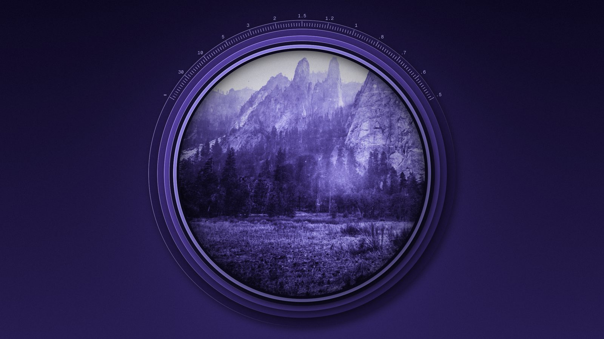
hero/lens-* — Watkins circular view (The Met, CC0) set in six cut-card rings with a focus scale
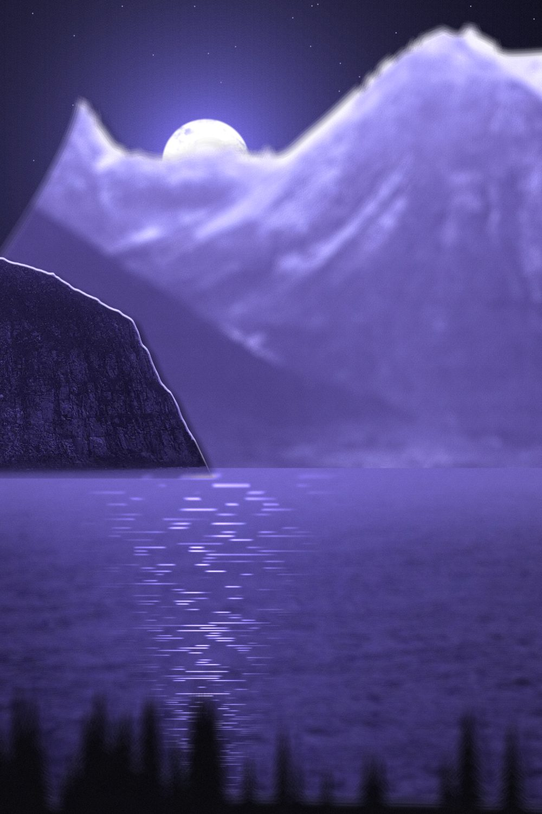
hero/nocturne-portrait-* — mobile art direction, focus racked to the headland, +0.25 EV
Turn the focus ring
scene/scene.js — five cut layers on real depth planes. Per-layer disc blur is true depth of field; exposure rolls into a violet shoulder; the camera drifts on springs with the pointer. Pauses off-screen. Demo: scene/demo.html.
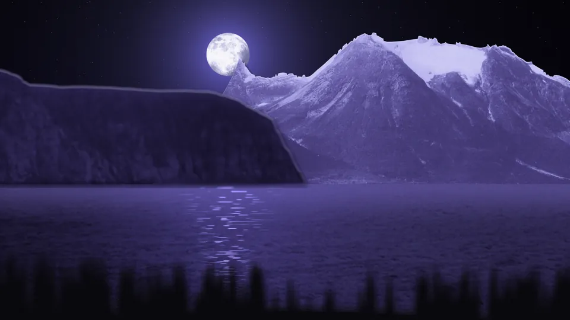
A moon behind a cut peak
The A is a peak cut once along the horizon: the slit is the crossbar, the lower piece its reflection. The moon sits behind it, half a stop from clearing the ridge.
mark.svg

mark-on-dark.svg
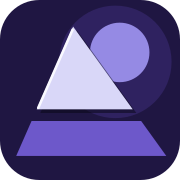
favicon.svg · favicon-180.png
wordmark.svg
wordmark-on-dark.svg
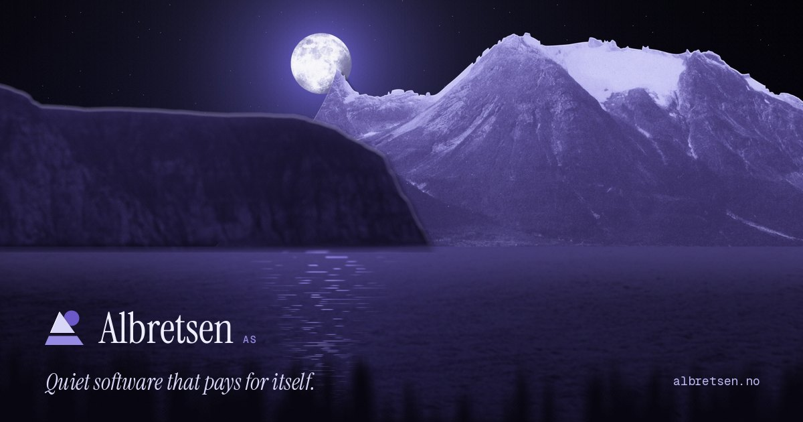
og.jpg — 1200×630
Eleven shades of one night
Lightness carries the hierarchy, chroma peaks in the middle. Use ink → umbra for grounds, iris → lilac for light sources and live state, mist → glow for type.
Specimen
Instrument Serif for the quiet headline voice; Geist for text; Geist Mono for readouts, figures and keys. All OFL via Google Fonts.
Quiet software that pays for itself.
Subjects in focus
Each product is the one sharp thing in its frame: the real logo on a paper plate, the world behind it racked out of focus. Hover: paper lift.
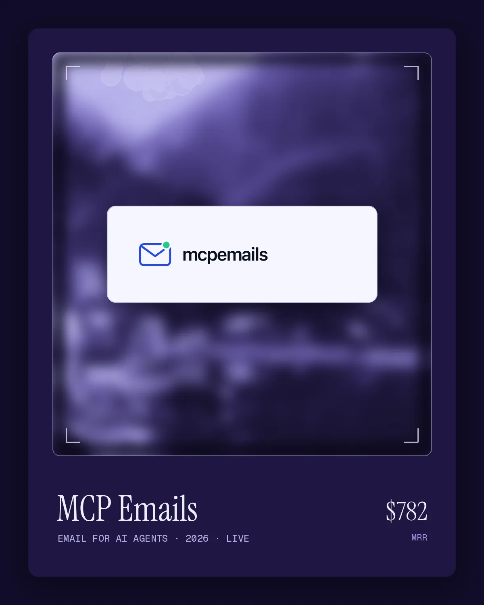
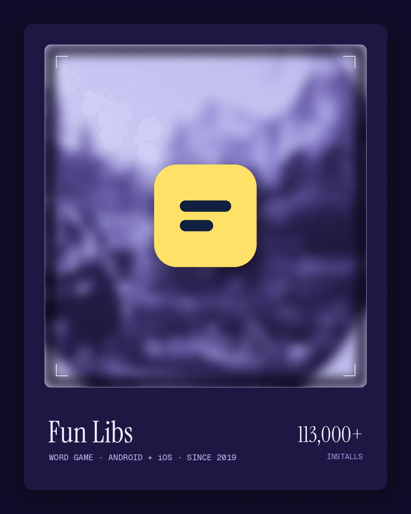
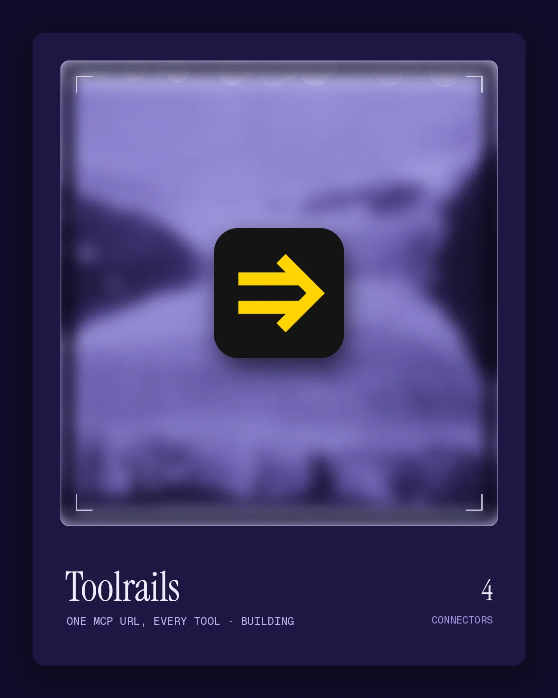
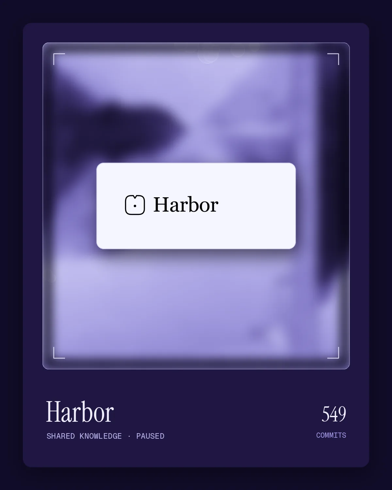
products/{id}.webp|jpg (1200×1500) and {id}-600.webp — press 1–4 to jump
Retired · negatives


Card, glass and film
Texture and small details that give a page its tooth.
extras/card-tooth.webp — 512px seamless violet card stock · extras/tooth-overlay.png (alpha)
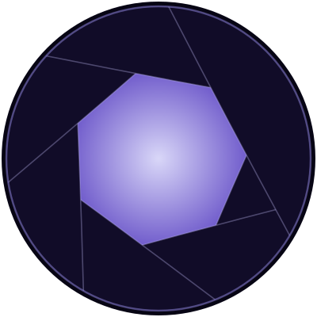
extras/iris.svg — same geometry as irisReveal()
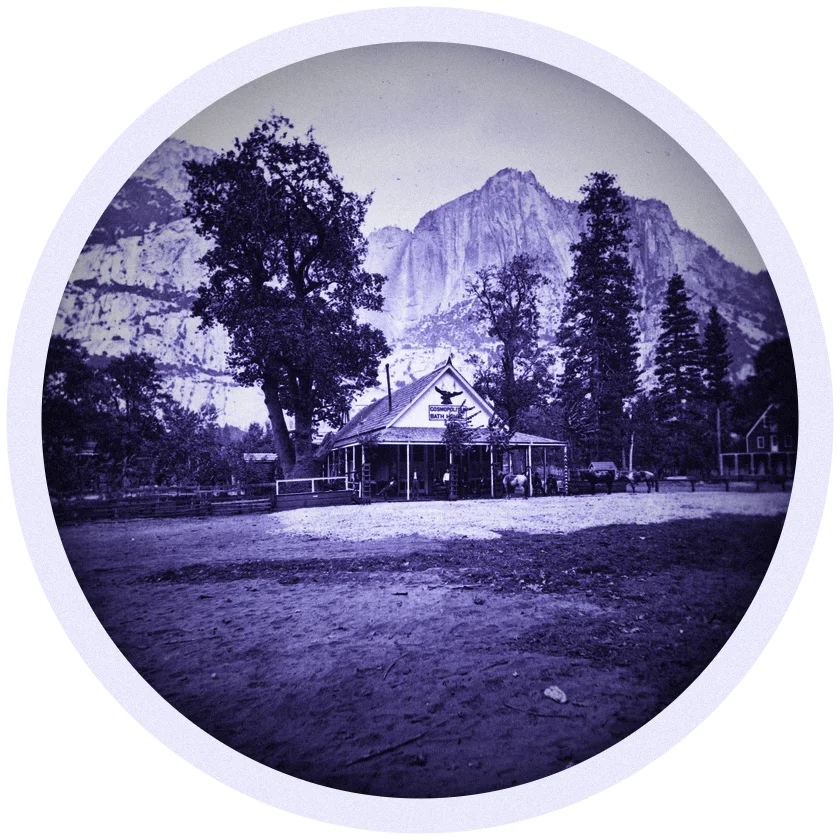
extras/round-print.webp — cut-out with paper margin
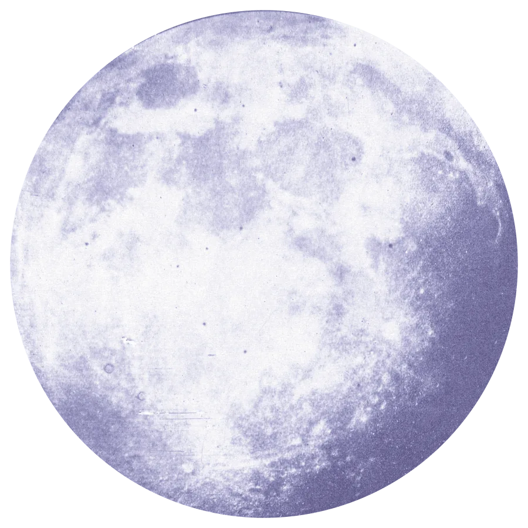
scene/moon.webp — Whipple, 1857–60 (The Met, CC0)
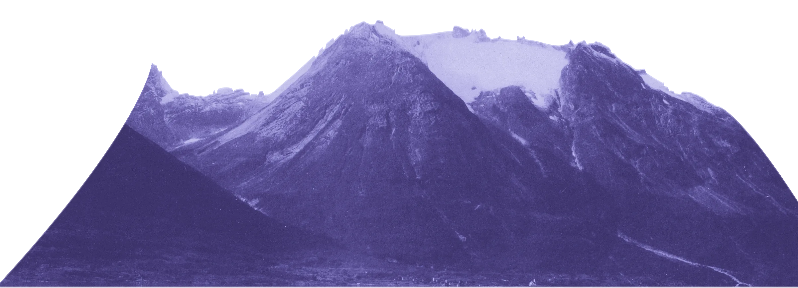
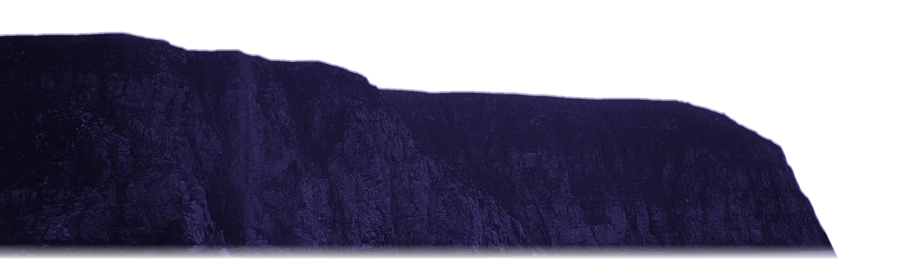
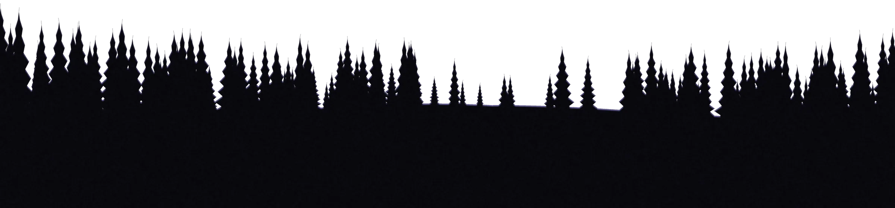
scene/layer-{far,mid,near,water}.webp — the cut layers
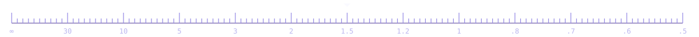
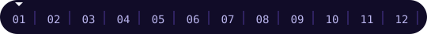
focus-scale.svg · frame-counter.svg · film-edge.svg · cursor-reticle.svg (hover here)
Five springs, no library
One semi-implicit Euler integrator at 240 Hz drives everything. Reduced-motion snaps every spring to its target.
1 · Rack Focus
Blur, opacity and a 2.5% lens-breathing scale on a weighty, bounce-free spring (k120 c22).
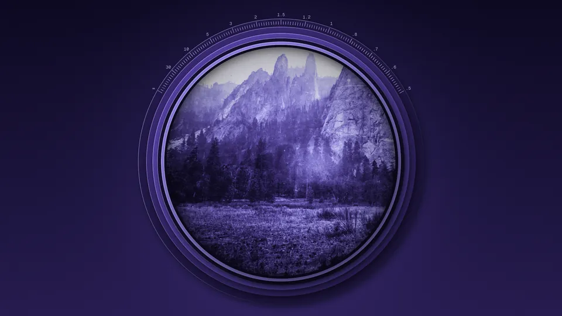
2 · Iris
Seven curved blades retract and untwist on an under-damped spring (k210 c19): one soft overshoot, then still.
3 · Paper Lift
Cut card rises, its shadow grows and softens, and it leans toward the pointer (k320 c24).
4 · Shutter
One exposure: a violet-white flash and a 1.2% dip that recovers on a stiff spring.
5 · Develop
The shortcut sheet rises like a print from the tray; rows settle in a 35 ms stagger.